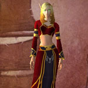
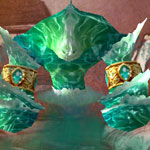
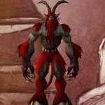
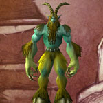

You can find the Dire Maul Warpwood Quarter dungeon within Feralas, Kalimdor.
The coordinates are (64.5,30.8)
Click for Dungeon Entrance:

Go up the path and into the building front called Eldreth Row, you can turn left or right here.
Go over to the right hand side and you will see against the wall small doorways, the right one is caved in and the left one is the dungeon entrance.

Route:
Map 1Map 2


Bosses:
1. Lethtendris2. Hydrospawn3. Zevrim Thornhoof4. Alzzin the Wildshaper

Quick Boss Tactics:/i Kill the add Pimgib first so boss can’t cast enlarge on him. Inflicts shadow & fire damage to players. Most spells are interruptible.

Quick Boss Tactics:/i Riptide & Massive Geyser knocks back players & inflicts frost damage. Summons Hydroling adds.

Quick Boss Tactics:/i Inflicts shadow damage to players. Sacrifice teleports a player to the alter stunning them & draining health.

Quick Boss Tactics:/i Kill all the groups of Lashers before boss fight. During Tree Form he can disarm & knock back players. During Dire Wolf Form he can slow players. Boss summons Imp minions.